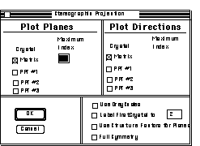
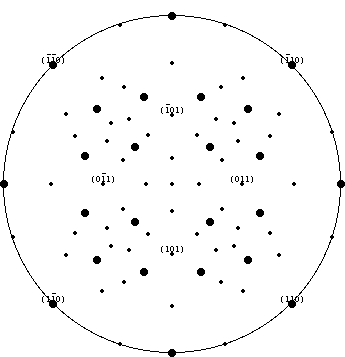

Stereograph Projection Tutorial
Stereographic Projections allow the crystallographer to view the angular
relationships between plane poles and directions. Desktop Microscopist allows
the user to calculate both plane and direction stereographic projections.
It will also allow the user to view a plot where pole intensity can be represented
by size and proportional intensity. The following directions demonstrate
plotting a plane pole projection, the addition of a set of direction poles,
the insertion of a tensile axis, the determination of angular distance between
two plane poles and finally the identification
of a dislocation direction.
From the File Menu, pull down to the New Menu Item, a hierarchical menu
will appear, select the item marked. Stereographic Projection;:

Stereographic Projection Definition Dialog Box
A window will open and the stereographic
projection definition box will be activated:
Check the option Label First Crystal, set the number to 1. Click the Planes
To check box associated with the Matrix and set the number to 3. Click
on Use Structure Factors for Planes and either press return or click on
the OK button. Desktop Microscopist will now calculate and plot a
standard stereographic projection for Al3Ti with the pole size dependent
on the most intense structure factor for that position.

Sample Stereographic Projection
- All graph windows have a special section which is located across the
top. This section, called the ruler;,
contains various buttons,
and space for two lines. The upper line above the buttons is provided for
short help instructions. When selecting a new function look to this line
for a brief description of how the function is activated. The line below
the row of buttons lists the function and will contain any information generated
by the function cursor. Look to this line for specific information which
may be calculated from actions taken on the screen such as d-spacings or
angle between planes, etc. When clicked, the square buttons give information
about the item described on the button. The button labeled Crystal 1 when
clicked gives a brief description of Crystal 1 (the Matrix crystal). Double
clicking on the button will bring-up the respective Definition
Dialog Box.
- Information about each of the plotted poles is available in an interactive
fashion. To obtain it, go to the menu labeled Info and select the item marked
Pole Info. The arrow cursor changes to the bulls-eye
cursor. To view the available information, click and hold down on the
pole of interest and a pop-up menu will appear in the top left corner with
a list of useful information. Holding the shift key down when clicking in
the same location allows information about the set of planes which may be
located at the same position in projection space to be displayed. Desktop
Microscopist beeps once upon completion of a cycle.
- To learn the angle between two crystals, select Angle Between Spots
under the Info menu. Next, while holding the <shift> key,
click on a pole of interest. This pole has now been 'set' as the reference
pole. Selecting any other pole on the projection displays the angle between
it and the reference pole. Continual selection will give angular information
with respect to the reference pole. To change the reference pole, hold down
the <shift> key while selecting a new pole.
- If it is desired to work with a specific set of higher poles, it is
possible to view these poles without plotting the entire stereographic projection
to the same high index. Desktop Microscopist allows specific poles and classes
of poles to be plotted as needed. Going to the Function menu and selecting
the item. Add Spots
will result in theAdd
Spots Dialog Box :
At this point, crystals have been defined, precipitate orientations set,
and a Stereographic Projection has been plotted. Now, it is time to utilize
Desktop Microscopist for a specific task...Determination
Of A Dislocation Direction->
Author:James T. Stanley J.
Stanley
 Desktop
Manual
Desktop
Manual
Distributed By: Virtual
Labs
Last Updated:1/12/96 Sat, Apr 27, 1996
{kind=link}